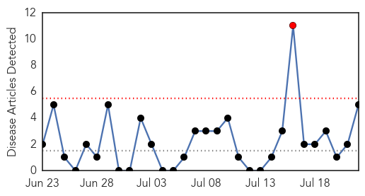
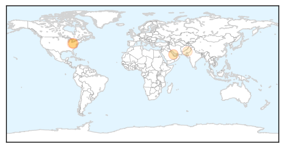
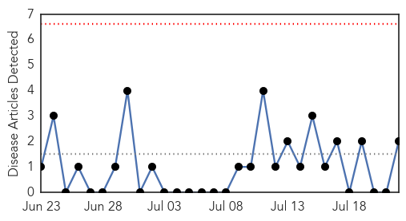
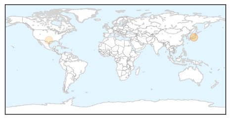

Hepatitis
30-Day Web Trend
1 alerts, 0 warnings

30-Day Twitter Trend
0 alerts, 0 warnings

Article Locations
Article Confidences

Top Articles:
- 0.874
- HMC and SCH stepping up efforts to combat communicable diseases
- 0.719
- Department of Health Alleges Unsafe Practices at McMechen Pain M
- 0.563
- Newham’s Pakistani community urged to learn about ‘silent’ epidemic
- 0.559
- Health officials: West Virginia clinic reused needles; patients there, Ohio urged to be tested
- 0.535
- West Virginia Bureau of Public Health Investigating a Clinic for Alleged Reuse of Needles
Top Tweets:
-
No tweets found for Jul 22, 2014
Meningitis
30-Day Web Trend
0 alerts, 0 warnings

30-Day Twitter Trend
0 alerts, 0 warnings

Article Locations
Article Confidences

Top Articles:
Top Tweets:
-
No tweets found for Jul 22, 2014